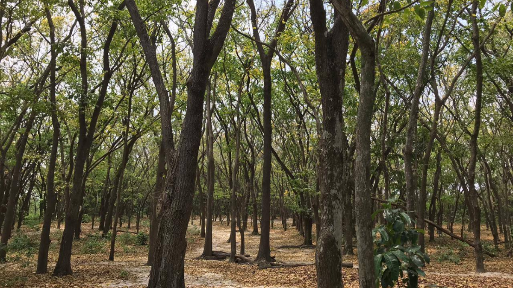
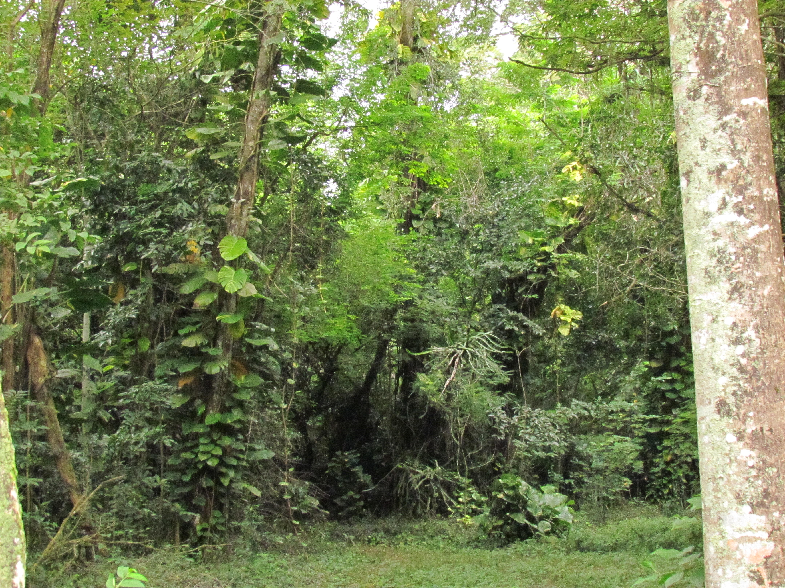
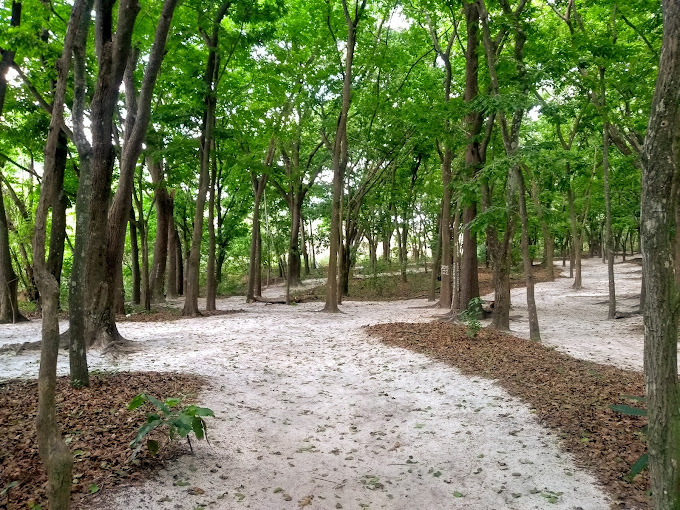
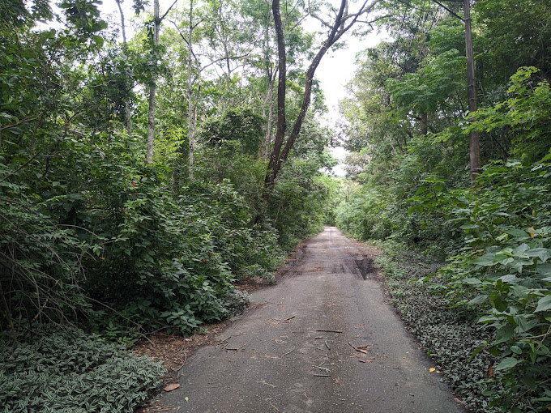
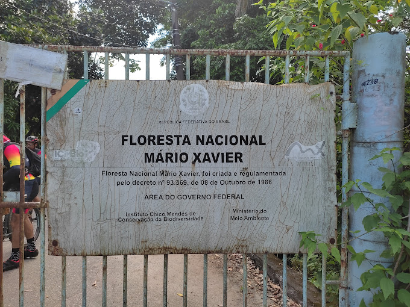

Floresta Nacional Mário Xavier
A Floresta Nacional Mário Xavier possui trilhas que permeiam o mosaico de vegetação que caracteriza a Unidade , passando por áreas de mata nativa, talhões de florestas plantadas de especies nativas e eucalipto.
Situação da visitação: Aberto
Período para a visitação: Segunda a Sexta, 07:00 as 16:30
Endereço: BR-465, km 3,5
CEP: 23894890
Bairro: Seropédica
Telefone: (21) 37871953
E-mail: flona.marioxavier@icmbio.gov.br
Período para a visitação: Segunda a Sexta, 07:00 as 16:30
Endereço: BR-465, km 3,5
CEP: 23894890
Bairro: Seropédica
Telefone: (21) 37871953
E-mail: flona.marioxavier@icmbio.gov.br